증명서발급안내
온라인 증명서 위변조 걱정, 이제 안심하세요!
증명서 위변조 방지란?
- 교보생명에서 온라인으로 발급된 모든 증명서는 수납한 기관의 담당자가 그 원본의 진위를 확인할 수 있도록 전자서명된 전자문서(PDF) 형태로 제공됩니다.
- 전자서명된 전자문서는 전자서명을 검증할 수 있는 뷰어(Adobe PDF Reader)로 위변조 여부를 확인할 수 있으며, 발급 시 전자서명에 사용된 인증서 정보를 검출해 어떤 기관에서 전자문서를 발급했는지 또한 확인 가능합니다.
- 발급받은 전자문서를 PC에서 인쇄할 경우, 인쇄된 증명서 아래에 있는 2차원 바코드(고밀도 바코드)를 스캐너로 읽어 바코드 검출 프로그램으로 문서 내용을 확인하는 방법으로 문서의 위변조를 방지합니다.
증명서 발급 절차 안내
- 01. 증명서 발급 확인/신청 (교보생명 홈페이지)
- 02. 발급 증명서 다운로드/인쇄 (교보생명 홈페이지)
- 03. 수납기관 제출 (검증완료)
증명서 위변조 방지기법
인터넷으로 발급되는 증명서에는 문서 발급 과정에서 위변조를 방지하기 위해 다음과 같은 기술들을 적용합니다.
전자서명
증명서 발급 서비스를 통해 다운로드한 전자문서는 서버에서 전자문서 생성 후 교보생명 공인인증서로 전자서명을 진행합니다. 전자서명 정보는 다운로드한 전자문서가 수정 또는 손상될 경우 서명 정보가 유효하지 않음을 확인할 때 사용됩니다. 전자서명 검출 기능이 있는 뷰어는 Adobe 사의 PDF Reader가 대표적입니다.
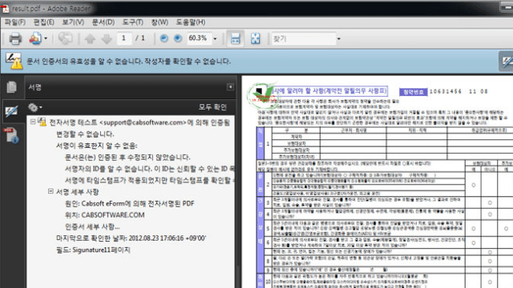
2차원 바코드
인쇄한 전자문서는 전자문서 생성 시 사용된 내용을 암호화해서 삽입한 2차원 바코드로 위변조 여부를 확인할 수 있습니다. 문서에 인쇄된 2차원 바코드를 스캐너로 읽은 후 원본 문서의 내용을 복원하여 인쇄한 문서의 내용과 비교함으로써 문서의 진위를 가려냅니다. 이를 위해 바코드 인식 프로그램을 배포하고 있습니다.
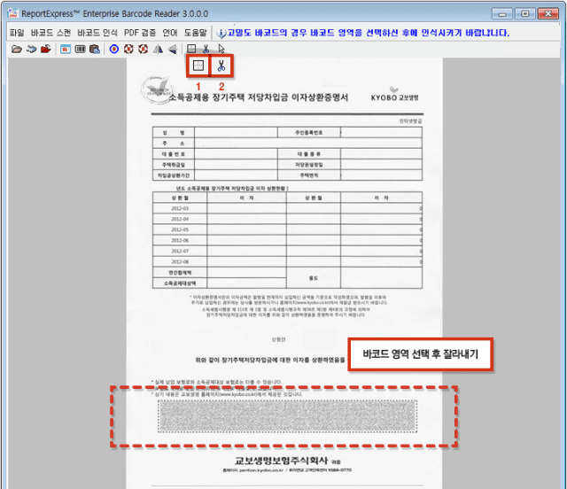
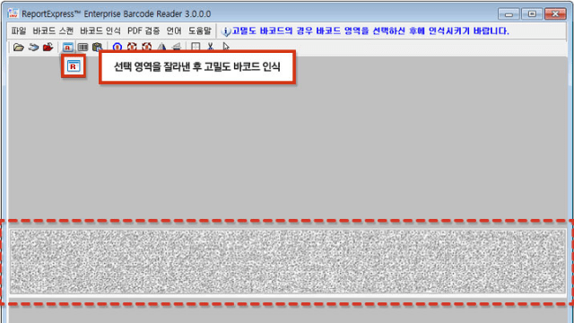
전자서명
전자서명 정보를 확인하려면 전자서명 검증 기능이 있는 PDF 뷰어 프로그램이 필요합니다. 가장 많이 사용되는 ‘PDF Reader’를 Adobe 홈페이지(www.adobe.com/kr)에서 다운로드한 뒤 설치해 주세요. 이 뷰어 프로그램으로 문서의 위변조 여부를 확인할 수 있습니다.
1. 뷰어 프로그램으로 전자문서를 열면 화면 위쪽에 [서명패널]이라는 버튼이 나타납니다.
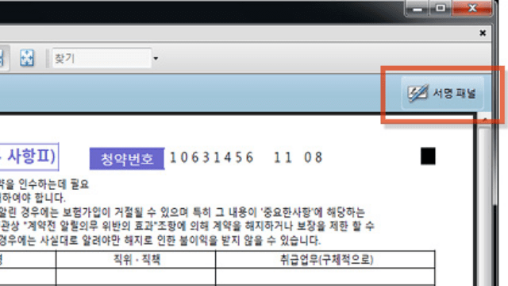
2. [서명패널]을 누르면 왼쪽에 ‘서명정보’ 화면이 나타납니다.
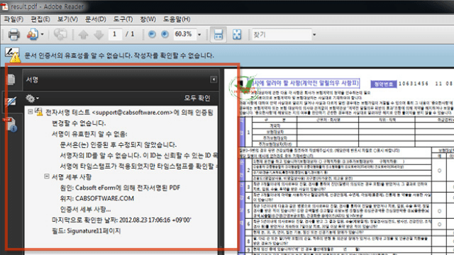
3. ‘서명정보’ 화면에 문서의 서명정보 변경 여부가 표시됩니다. 전자서명이 손상된 경우에는 ‘문서가 서명된 이후 변경되었거나 손상되었다’는 메시지가 표시됩니다.
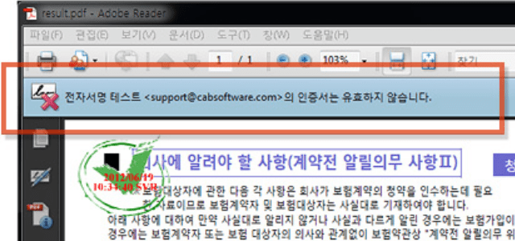
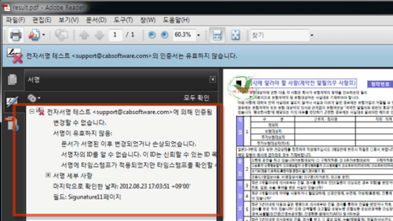
4. [증서 세부정보]를 누르면 전자서명에 사용된 인증서 정보가 화면에 나타납니다.
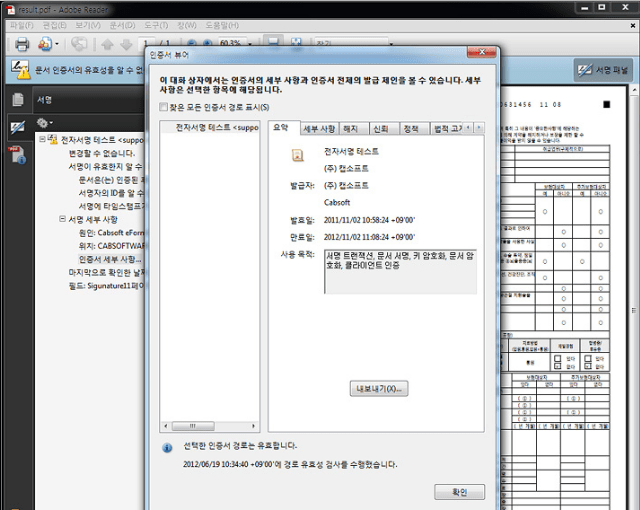
2차원 바코드
발급받은 전자문서를 인쇄할 경우에는 문서에 표시된 2차원 바코드를 스캐너를 이용해 이미지로 변환한 후 바코드 인식 프로그램으로 문서의 위변조 여부를 확인할 수 있습니다.
1. 먼저 스캐너를 이용해 인쇄한 문서를 이미지 파일(300dpi 이상)로 변환합니다. 그리고 바코드 인식 프로그램을 다운로드하여 설치합니다.


2. 바코드 인식 프로그램을 실행하고 변환한 이미지 파일을 불러 와서 바코드 영역을 잘라냅니다.
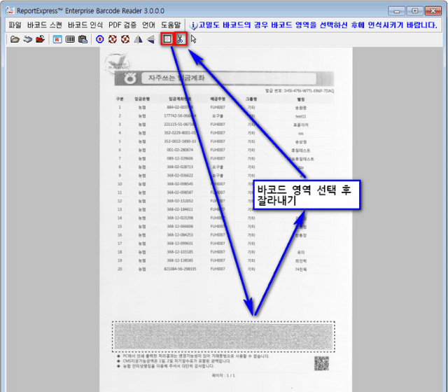
3. 툴바의 [고밀도 바코드 인식] 버튼을 눌러 바코드에 삽입된 내용을 인식시킵니다.
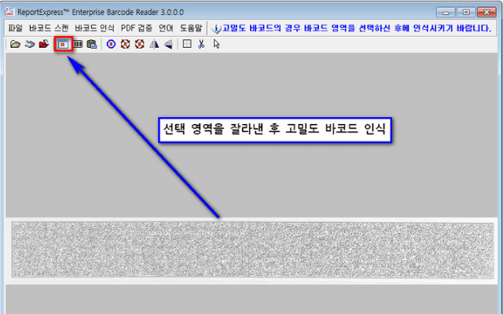
4. 프로그램으로 인식한 내용과 인쇄한 증명서를 비교해서 내용을 검증합니다.
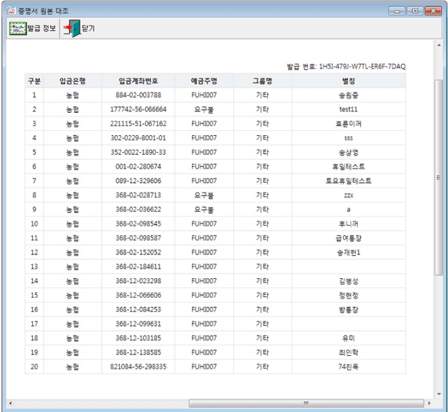
-
증명서를 발급 받으려고 하는데 발급이 되지 않습니다. 혹시 프로그램을 설치해야 하나요?증명서 발급을 위해 별도로 설치하는 프로그램은 없습니다. 증명서 발급을 신청하면 전자문서를 다운로드할 수 있습니다. 파일이 자동으로 저장되도록 설정되어 있다면 다운로드 폴더에 PDF 파일이 있는지 확인해 보세요.
-
증명서를 발급받으려면 반드시 프린터가 필요한가요?전자서명된 전자문서 파일(PDF)을 이용하기 때문에 프린터가 반드시 필요한 것은 아닙니다.
-
증명서 위변조 여부는 어떻게 확인하나요?전자문서에 전자서명을 했기 때문에 문서가 위변조되면 서명 유효성이 사라집니다.
Adobe PDF Reader를 이용하면 [서명패널] 버튼을 눌러 문서 수정 여부를 확인하실 수 있습니다. -
전자문서를 인쇄할 경우 위변조 여부를 어떻게 확인하나요?인쇄한 문서에 있는 2차원 바코드를 바코드 인식 프로그램을 이용하여 인식시킨 후 인쇄된 내용과 비교하면 위변조 여부가 확인됩니다.
-
전자문서 뷰어 프로그램은 반드시 Adobe PDF Reader를 써야 하나요?다른 PDF 뷰어를 사용하셔도 됩니다. 다만 전자서명 정보를 확인하려면 해당 기능이 있는 뷰어를 사용해야 하는데, 가장 많이 사용되는 뷰어가 Adobe PDF Reader입니다.
-
바코드 인식 프로그램은 어디에서 다운로드하나요?